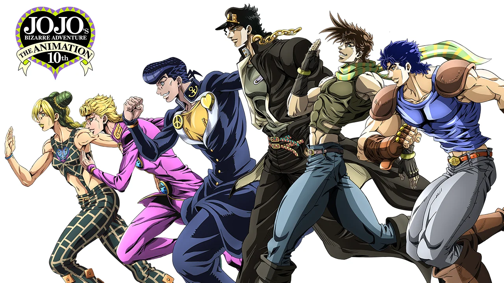

Jojo's Bizarre Adventure is an anime series that follows the Joestar family, who possess unique powers and abilities that they use to fight against supernatural threats. Each season of the series focuses on a different member of the Joestar family, and their adventures as they face off against powerful and bizarre enemies.
Jojo's Bizarre Adventure is an anime series that has been adapted from the popular manga of the same name. The story follows the Joestar family, who possess unique powers and abilities that they use to fight against supernatural threats. Each season of the series focuses on a different member of the Joestar family, and their adventures as they face off against powerful and bizarre enemies.
The series is known for its over-the-top action scenes, eccentric characters, and unique art style. It's a classic in the anime and manga world, and has a large and dedicated fanbase.
The first season of the anime follows the story of Jonathan Joestar, the heir to the Joestar family fortune. He encounters Dio Brando, a young man who becomes his adopted brother but later reveals himself to be a powerful and malevolent vampire. The two engage in a bitter and intense rivalry that spans generations.
Subsequent seasons of the series follow the adventures of other members of the Joestar family, each with their own unique powers and abilities. The series is set in different time periods and locations, ranging from Victorian England to 1980s America, and features a diverse cast of characters.
The series is a blend of action, adventure, comedy, drama, and supernatural elements. It explores themes of family, loyalty, friendship, and the struggle between good and evil. The series is notable for its unique and innovative use of special powers, known as "Stands," which give each character a distinct set of abilities and strengths.
